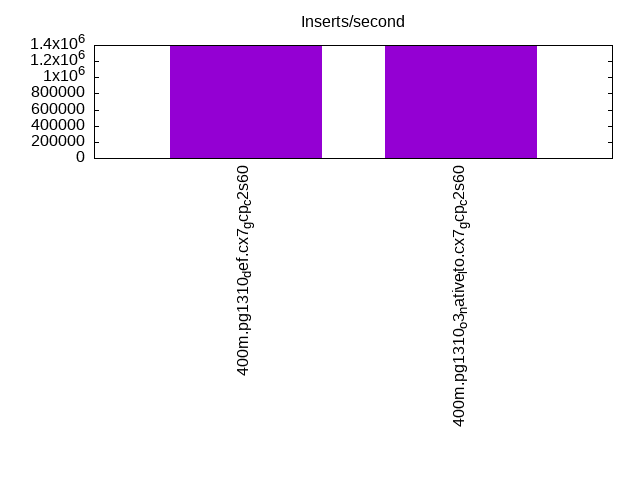
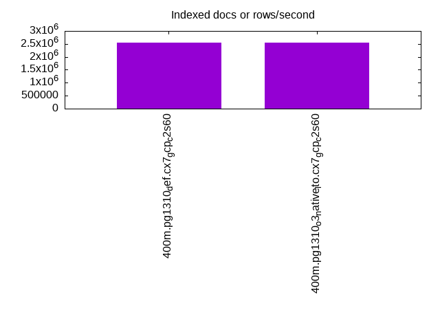
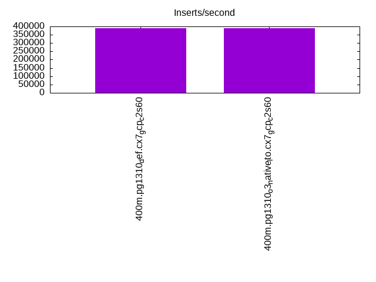
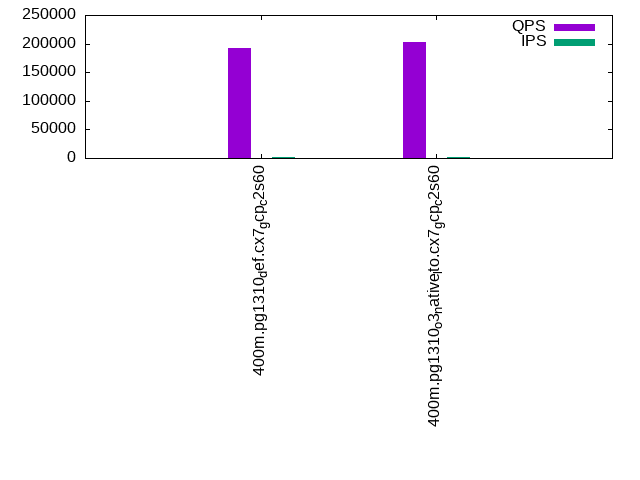
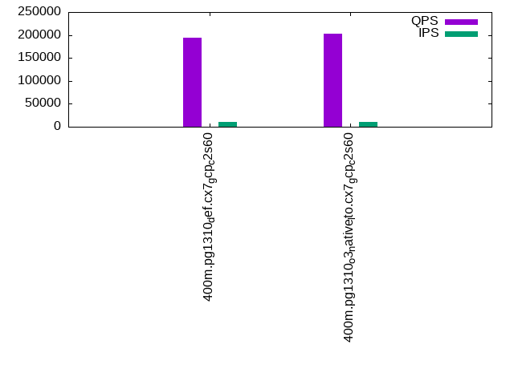
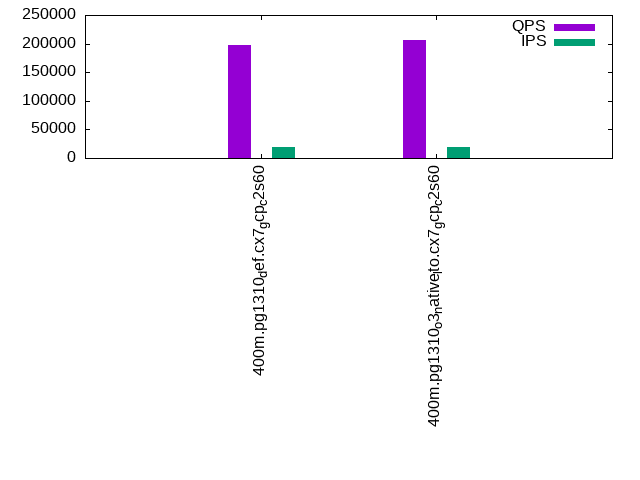

This is a report for the insert benchmark with 400M docs and 20 client(s). It is generated by scripts (bash, awk, sed) and Tufte might not be impressed. An overview of the insert benchmark is here and a short update is here. Below, by DBMS, I mean DBMS+version.config. An example is my8020.c10b40 where my means MySQL, 8020 is version 8.0.20 and c10b40 is the name for the configuration file.
The test server is a c2-standard-60 from GCP with 30 cores, hyperthreading disabled, 240G RAM and 3T from XFS and SW RAID 0 striped over 8 local NVMe drives. The benchmark was run with 20 clients and there were 1 or 2 connections per client (1 for queries, 1 for inserts). The benchmark loads 400M rows without secondary indexes, creates secondary indexes, loads another 400M rows then does 3 read+write tests for one hour each that do queries as fast as possible with 100, 500 and then 1000 writes/second/client concurrent with the queries. Each read-write test runs for 1800 seconds. The test was configured to use a table per client. The database is cached by the storage engine and the only IO is for writes. Clients and the DBMS share one server. The per-database configs are in the per-database subdirectories here.
The tested DBMS are:
The numbers are inserts/s for l.i0 and l.i1, indexed docs (or rows) /s for l.x and queries/s for q*.2. The values are the average rate over the entire test for inserts (IPS) and queries (QPS). The range of values for IPS and QPS is split into 3 parts: bottom 25%, middle 50%, top 25%. Values in the bottom 25% have a red background, values in the top 25% have a green background and values in the middle have no color. A gray background is used for values that can be ignored because the DBMS did not sustain the target insert rate. Red backgrounds are not used when the minimum value is within 80% of the max value.
| dbms | l.i0 | l.x | l.i1 | q100.1 | q500.1 | q1000.1 |
|---|---|---|---|---|---|---|
| 400m.pg1310_def.cx7_gcp_c2s60 | 1384083 | 2548408 | 390625 | 192369 | 193828 | 197050 |
| 400m.pg1310_o3_native_lto.cx7_gcp_c2s60 | 1398601 | 2548408 | 391007 | 202283 | 202002 | 206280 |
This lists the average rate of inserts/s for the tests that do inserts concurrent with queries. For such tests the query rate is listed in the table above. The read+write tests are setup so that the insert rate should match the target rate every second. Cells that are not at least 95% of the target have a red background to indicate a failure to satisfy the target.
| dbms | q100.1 | q500.1 | q1000.1 |
|---|---|---|---|
| pg1310_def.cx7_gcp_c2s60 | 1976 | 9885 | 19769 |
| pg1310_o3_native_lto.cx7_gcp_c2s60 | 1976 | 9885 | 19769 |
| target | 2000 | 10000 | 20000 |
l.i0: load without secondary indexes. Graphs for performance per 1-second interval are here.
Average throughput:
Insert response time histogram: each cell has the percentage of responses that take <= the time in the header and max is the max response time in seconds. For the max column values in the top 25% of the range have a red background and in the bottom 25% of the range have a green background. The red background is not used when the min value is within 80% of the max value.
| dbms | 256us | 1ms | 4ms | 16ms | 64ms | 256ms | 1s | 4s | 16s | gt | max |
|---|---|---|---|---|---|---|---|---|---|---|---|
| pg1310_def.cx7_gcp_c2s60 | 60.424 | 38.599 | 0.927 | 0.020 | 0.019 | 0.012 | 0.948 | ||||
| pg1310_o3_native_lto.cx7_gcp_c2s60 | 58.623 | 40.556 | 0.776 | 0.012 | 0.019 | 0.013 | 0.780 |
Performance metrics for the DBMS listed above. Some are normalized by throughput, others are not. Legend for results is here.
ips qps rps rmbps wps wmbps rpq rkbpq wpi wkbpi csps cpups cspq cpupq dbgb1 dbgb2 rss maxop p50 p99 tag 1384083 0 0 0.0 1840.4 462.1 0.000 0.000 0.001 0.342 225249 60.8 0.163 13 38.3 103.4 NA 0.948 79146 9889 400m.pg1310_def.cx7_gcp_c2s60 1398601 0 0 0.0 1880.2 466.2 0.000 0.000 0.001 0.341 252982 59.4 0.181 13 38.3 103.4 NA 0.780 79589 7392 400m.pg1310_o3_native_lto.cx7_gcp_c2s60
l.x: create secondary indexes.
Average throughput:
Performance metrics for the DBMS listed above. Some are normalized by throughput, others are not. Legend for results is here.
ips qps rps rmbps wps wmbps rpq rkbpq wpi wkbpi csps cpups cspq cpupq dbgb1 dbgb2 rss maxop p50 p99 tag 2548408 0 6942 108.1 3495.9 849.1 0.003 0.043 0.001 0.341 99732 25.7 0.039 3 73.5 170.7 0.0 0.205 NA NA 400m.pg1310_def.cx7_gcp_c2s60 2548408 0 9905 112.1 3471.0 851.8 0.004 0.045 0.001 0.342 103215 25.1 0.041 3 73.5 170.7 0.0 0.399 NA NA 400m.pg1310_o3_native_lto.cx7_gcp_c2s60
l.i1: continue load after secondary indexes created. Graphs for performance per 1-second interval are here.
Average throughput:
Insert response time histogram: each cell has the percentage of responses that take <= the time in the header and max is the max response time in seconds. For the max column values in the top 25% of the range have a red background and in the bottom 25% of the range have a green background. The red background is not used when the min value is within 80% of the max value.
| dbms | 256us | 1ms | 4ms | 16ms | 64ms | 256ms | 1s | 4s | 16s | gt | max |
|---|---|---|---|---|---|---|---|---|---|---|---|
| pg1310_def.cx7_gcp_c2s60 | 0.001 | 95.834 | 2.442 | 1.679 | 0.033 | 0.012 | 0.843 | ||||
| pg1310_o3_native_lto.cx7_gcp_c2s60 | 0.035 | 95.889 | 2.323 | 1.704 | 0.038 | 0.012 | 0.969 |
Performance metrics for the DBMS listed above. Some are normalized by throughput, others are not. Legend for results is here.
ips qps rps rmbps wps wmbps rpq rkbpq wpi wkbpi csps cpups cspq cpupq dbgb1 dbgb2 rss maxop p50 p99 tag 390625 0 5127 43.9 3567.7 491.7 0.013 0.115 0.009 1.289 288090 50.2 0.738 39 163.3 320.3 0.0 0.843 25223 1698 400m.pg1310_def.cx7_gcp_c2s60 391007 0 4916 43.3 3570.6 495.2 0.013 0.113 0.009 1.297 308027 49.3 0.788 38 163.3 319.3 NA 0.969 25322 1798 400m.pg1310_o3_native_lto.cx7_gcp_c2s60
q100.1: range queries with 100 insert/s per client. Graphs for performance per 1-second interval are here.
Average throughput:
Query response time histogram: each cell has the percentage of responses that take <= the time in the header and max is the max response time in seconds. For max values in the top 25% of the range have a red background and in the bottom 25% of the range have a green background. The red background is not used when the min value is within 80% of the max value.
| dbms | 256us | 1ms | 4ms | 16ms | 64ms | 256ms | 1s | 4s | 16s | gt | max |
|---|---|---|---|---|---|---|---|---|---|---|---|
| pg1310_def.cx7_gcp_c2s60 | 99.970 | 0.023 | 0.006 | 0.001 | nonzero | 0.025 | |||||
| pg1310_o3_native_lto.cx7_gcp_c2s60 | 99.976 | 0.018 | 0.006 | 0.001 | nonzero | 0.024 |
Insert response time histogram: each cell has the percentage of responses that take <= the time in the header and max is the max response time in seconds. For max values in the top 25% of the range have a red background and in the bottom 25% of the range have a green background. The red background is not used when the min value is within 80% of the max value.
| dbms | 256us | 1ms | 4ms | 16ms | 64ms | 256ms | 1s | 4s | 16s | gt | max |
|---|---|---|---|---|---|---|---|---|---|---|---|
| pg1310_def.cx7_gcp_c2s60 | 91.564 | 6.311 | 2.115 | 0.001 | 0.008 | 0.299 | |||||
| pg1310_o3_native_lto.cx7_gcp_c2s60 | 92.054 | 5.771 | 2.160 | 0.015 | 0.123 |
Performance metrics for the DBMS listed above. Some are normalized by throughput, others are not. Legend for results is here.
ips qps rps rmbps wps wmbps rpq rkbpq wpi wkbpi csps cpups cspq cpupq dbgb1 dbgb2 rss maxop p50 p99 tag 1976 192369 0 0.0 3702.2 88.9 0.000 0.000 1.874 46.095 681354 63.1 3.542 98 163.9 266.8 0.0 0.025 9557 9142 400m.pg1310_def.cx7_gcp_c2s60 1976 202283 0 0.0 3707.8 88.8 0.000 0.000 1.877 46.009 716261 62.9 3.541 93 163.9 266.0 0.0 0.024 9962 9541 400m.pg1310_o3_native_lto.cx7_gcp_c2s60
q500.1: range queries with 500 insert/s per client. Graphs for performance per 1-second interval are here.
Average throughput:
Query response time histogram: each cell has the percentage of responses that take <= the time in the header and max is the max response time in seconds. For max values in the top 25% of the range have a red background and in the bottom 25% of the range have a green background. The red background is not used when the min value is within 80% of the max value.
| dbms | 256us | 1ms | 4ms | 16ms | 64ms | 256ms | 1s | 4s | 16s | gt | max |
|---|---|---|---|---|---|---|---|---|---|---|---|
| pg1310_def.cx7_gcp_c2s60 | 99.909 | 0.059 | 0.029 | 0.003 | nonzero | nonzero | 0.083 | ||||
| pg1310_o3_native_lto.cx7_gcp_c2s60 | 99.915 | 0.054 | 0.028 | 0.003 | nonzero | 0.063 |
Insert response time histogram: each cell has the percentage of responses that take <= the time in the header and max is the max response time in seconds. For max values in the top 25% of the range have a red background and in the bottom 25% of the range have a green background. The red background is not used when the min value is within 80% of the max value.
| dbms | 256us | 1ms | 4ms | 16ms | 64ms | 256ms | 1s | 4s | 16s | gt | max |
|---|---|---|---|---|---|---|---|---|---|---|---|
| pg1310_def.cx7_gcp_c2s60 | 44.411 | 26.247 | 27.947 | 1.395 | nonzero | 0.260 | |||||
| pg1310_o3_native_lto.cx7_gcp_c2s60 | 44.383 | 25.768 | 28.405 | 1.444 | 0.236 |
Performance metrics for the DBMS listed above. Some are normalized by throughput, others are not. Legend for results is here.
ips qps rps rmbps wps wmbps rpq rkbpq wpi wkbpi csps cpups cspq cpupq dbgb1 dbgb2 rss maxop p50 p99 tag 9885 193828 0 0.0 6176.7 204.9 0.000 0.000 0.625 21.230 675126 64.2 3.483 99 167.5 245.1 0.0 0.083 9621 9146 400m.pg1310_def.cx7_gcp_c2s60 9885 202002 0 0.0 6179.4 204.8 0.000 0.000 0.625 21.217 703278 63.9 3.482 95 167.5 244.9 0.0 0.063 10053 9510 400m.pg1310_o3_native_lto.cx7_gcp_c2s60
q1000.1: range queries with 1000 insert/s per client. Graphs for performance per 1-second interval are here.
Average throughput:
Query response time histogram: each cell has the percentage of responses that take <= the time in the header and max is the max response time in seconds. For max values in the top 25% of the range have a red background and in the bottom 25% of the range have a green background. The red background is not used when the min value is within 80% of the max value.
| dbms | 256us | 1ms | 4ms | 16ms | 64ms | 256ms | 1s | 4s | 16s | gt | max |
|---|---|---|---|---|---|---|---|---|---|---|---|
| pg1310_def.cx7_gcp_c2s60 | 99.847 | 0.102 | 0.044 | 0.008 | 0.001 | nonzero | 0.085 | ||||
| pg1310_o3_native_lto.cx7_gcp_c2s60 | 99.855 | 0.095 | 0.042 | 0.007 | 0.001 | nonzero | 0.093 |
Insert response time histogram: each cell has the percentage of responses that take <= the time in the header and max is the max response time in seconds. For max values in the top 25% of the range have a red background and in the bottom 25% of the range have a green background. The red background is not used when the min value is within 80% of the max value.
| dbms | 256us | 1ms | 4ms | 16ms | 64ms | 256ms | 1s | 4s | 16s | gt | max |
|---|---|---|---|---|---|---|---|---|---|---|---|
| pg1310_def.cx7_gcp_c2s60 | 56.106 | 21.458 | 20.849 | 1.587 | nonzero | 0.258 | |||||
| pg1310_o3_native_lto.cx7_gcp_c2s60 | 56.539 | 21.159 | 20.734 | 1.567 | 0.001 | 0.278 |
Performance metrics for the DBMS listed above. Some are normalized by throughput, others are not. Legend for results is here.
ips qps rps rmbps wps wmbps rpq rkbpq wpi wkbpi csps cpups cspq cpupq dbgb1 dbgb2 rss maxop p50 p99 tag 19769 197050 0 0.0 5630.4 304.9 0.000 0.000 0.285 15.795 665704 65.4 3.378 100 179.6 259.6 0.0 0.085 9738 8950 400m.pg1310_def.cx7_gcp_c2s60 19769 206280 0 0.0 5634.1 306.4 0.000 0.000 0.285 15.872 697095 65.1 3.379 95 179.6 259.6 0.0 0.093 10249 9302 400m.pg1310_o3_native_lto.cx7_gcp_c2s60
l.i0: load without secondary indexes
Performance metrics for all DBMS, not just the ones listed above. Some are normalized by throughput, others are not. Legend for results is here.
ips qps rps rmbps wps wmbps rpq rkbpq wpi wkbpi csps cpups cspq cpupq dbgb1 dbgb2 rss maxop p50 p99 tag 1384083 0 0 0.0 1840.4 462.1 0.000 0.000 0.001 0.342 225249 60.8 0.163 13 38.3 103.4 NA 0.948 79146 9889 400m.pg1310_def.cx7_gcp_c2s60 1398601 0 0 0.0 1880.2 466.2 0.000 0.000 0.001 0.341 252982 59.4 0.181 13 38.3 103.4 NA 0.780 79589 7392 400m.pg1310_o3_native_lto.cx7_gcp_c2s60
l.x: create secondary indexes
Performance metrics for all DBMS, not just the ones listed above. Some are normalized by throughput, others are not. Legend for results is here.
ips qps rps rmbps wps wmbps rpq rkbpq wpi wkbpi csps cpups cspq cpupq dbgb1 dbgb2 rss maxop p50 p99 tag 2548408 0 6942 108.1 3495.9 849.1 0.003 0.043 0.001 0.341 99732 25.7 0.039 3 73.5 170.7 0.0 0.205 NA NA 400m.pg1310_def.cx7_gcp_c2s60 2548408 0 9905 112.1 3471.0 851.8 0.004 0.045 0.001 0.342 103215 25.1 0.041 3 73.5 170.7 0.0 0.399 NA NA 400m.pg1310_o3_native_lto.cx7_gcp_c2s60
l.i1: continue load after secondary indexes created
Performance metrics for all DBMS, not just the ones listed above. Some are normalized by throughput, others are not. Legend for results is here.
ips qps rps rmbps wps wmbps rpq rkbpq wpi wkbpi csps cpups cspq cpupq dbgb1 dbgb2 rss maxop p50 p99 tag 390625 0 5127 43.9 3567.7 491.7 0.013 0.115 0.009 1.289 288090 50.2 0.738 39 163.3 320.3 0.0 0.843 25223 1698 400m.pg1310_def.cx7_gcp_c2s60 391007 0 4916 43.3 3570.6 495.2 0.013 0.113 0.009 1.297 308027 49.3 0.788 38 163.3 319.3 NA 0.969 25322 1798 400m.pg1310_o3_native_lto.cx7_gcp_c2s60
q100.1: range queries with 100 insert/s per client
Performance metrics for all DBMS, not just the ones listed above. Some are normalized by throughput, others are not. Legend for results is here.
ips qps rps rmbps wps wmbps rpq rkbpq wpi wkbpi csps cpups cspq cpupq dbgb1 dbgb2 rss maxop p50 p99 tag 1976 192369 0 0.0 3702.2 88.9 0.000 0.000 1.874 46.095 681354 63.1 3.542 98 163.9 266.8 0.0 0.025 9557 9142 400m.pg1310_def.cx7_gcp_c2s60 1976 202283 0 0.0 3707.8 88.8 0.000 0.000 1.877 46.009 716261 62.9 3.541 93 163.9 266.0 0.0 0.024 9962 9541 400m.pg1310_o3_native_lto.cx7_gcp_c2s60
q500.1: range queries with 500 insert/s per client
Performance metrics for all DBMS, not just the ones listed above. Some are normalized by throughput, others are not. Legend for results is here.
ips qps rps rmbps wps wmbps rpq rkbpq wpi wkbpi csps cpups cspq cpupq dbgb1 dbgb2 rss maxop p50 p99 tag 9885 193828 0 0.0 6176.7 204.9 0.000 0.000 0.625 21.230 675126 64.2 3.483 99 167.5 245.1 0.0 0.083 9621 9146 400m.pg1310_def.cx7_gcp_c2s60 9885 202002 0 0.0 6179.4 204.8 0.000 0.000 0.625 21.217 703278 63.9 3.482 95 167.5 244.9 0.0 0.063 10053 9510 400m.pg1310_o3_native_lto.cx7_gcp_c2s60
q1000.1: range queries with 1000 insert/s per client
Performance metrics for all DBMS, not just the ones listed above. Some are normalized by throughput, others are not. Legend for results is here.
ips qps rps rmbps wps wmbps rpq rkbpq wpi wkbpi csps cpups cspq cpupq dbgb1 dbgb2 rss maxop p50 p99 tag 19769 197050 0 0.0 5630.4 304.9 0.000 0.000 0.285 15.795 665704 65.4 3.378 100 179.6 259.6 0.0 0.085 9738 8950 400m.pg1310_def.cx7_gcp_c2s60 19769 206280 0 0.0 5634.1 306.4 0.000 0.000 0.285 15.872 697095 65.1 3.379 95 179.6 259.6 0.0 0.093 10249 9302 400m.pg1310_o3_native_lto.cx7_gcp_c2s60
Insert response time histogram
256us 1ms 4ms 16ms 64ms 256ms 1s 4s 16s gt max tag 0.000 60.424 38.599 0.927 0.020 0.019 0.012 0.000 0.000 0.000 0.948 pg1310_def.cx7_gcp_c2s60 0.000 58.623 40.556 0.776 0.012 0.019 0.013 0.000 0.000 0.000 0.780 pg1310_o3_native_lto.cx7_gcp_c2s60
TODO - determine whether there is data for create index response time
Insert response time histogram
256us 1ms 4ms 16ms 64ms 256ms 1s 4s 16s gt max tag 0.000 0.001 95.834 2.442 1.679 0.033 0.012 0.000 0.000 0.000 0.843 pg1310_def.cx7_gcp_c2s60 0.000 0.035 95.889 2.323 1.704 0.038 0.012 0.000 0.000 0.000 0.969 pg1310_o3_native_lto.cx7_gcp_c2s60
Query response time histogram
256us 1ms 4ms 16ms 64ms 256ms 1s 4s 16s gt max tag 99.970 0.023 0.006 0.001 nonzero 0.000 0.000 0.000 0.000 0.000 0.025 pg1310_def.cx7_gcp_c2s60 99.976 0.018 0.006 0.001 nonzero 0.000 0.000 0.000 0.000 0.000 0.024 pg1310_o3_native_lto.cx7_gcp_c2s60
Insert response time histogram
256us 1ms 4ms 16ms 64ms 256ms 1s 4s 16s gt max tag 0.000 0.000 91.564 6.311 2.115 0.001 0.008 0.000 0.000 0.000 0.299 pg1310_def.cx7_gcp_c2s60 0.000 0.000 92.054 5.771 2.160 0.015 0.000 0.000 0.000 0.000 0.123 pg1310_o3_native_lto.cx7_gcp_c2s60
Query response time histogram
256us 1ms 4ms 16ms 64ms 256ms 1s 4s 16s gt max tag 99.909 0.059 0.029 0.003 nonzero nonzero 0.000 0.000 0.000 0.000 0.083 pg1310_def.cx7_gcp_c2s60 99.915 0.054 0.028 0.003 nonzero 0.000 0.000 0.000 0.000 0.000 0.063 pg1310_o3_native_lto.cx7_gcp_c2s60
Insert response time histogram
256us 1ms 4ms 16ms 64ms 256ms 1s 4s 16s gt max tag 0.000 0.000 44.411 26.247 27.947 1.395 nonzero 0.000 0.000 0.000 0.260 pg1310_def.cx7_gcp_c2s60 0.000 0.000 44.383 25.768 28.405 1.444 0.000 0.000 0.000 0.000 0.236 pg1310_o3_native_lto.cx7_gcp_c2s60
Query response time histogram
256us 1ms 4ms 16ms 64ms 256ms 1s 4s 16s gt max tag 99.847 0.102 0.044 0.008 0.001 nonzero 0.000 0.000 0.000 0.000 0.085 pg1310_def.cx7_gcp_c2s60 99.855 0.095 0.042 0.007 0.001 nonzero 0.000 0.000 0.000 0.000 0.093 pg1310_o3_native_lto.cx7_gcp_c2s60
Insert response time histogram
256us 1ms 4ms 16ms 64ms 256ms 1s 4s 16s gt max tag 0.000 0.000 56.106 21.458 20.849 1.587 nonzero 0.000 0.000 0.000 0.258 pg1310_def.cx7_gcp_c2s60 0.000 0.000 56.539 21.159 20.734 1.567 0.001 0.000 0.000 0.000 0.278 pg1310_o3_native_lto.cx7_gcp_c2s60